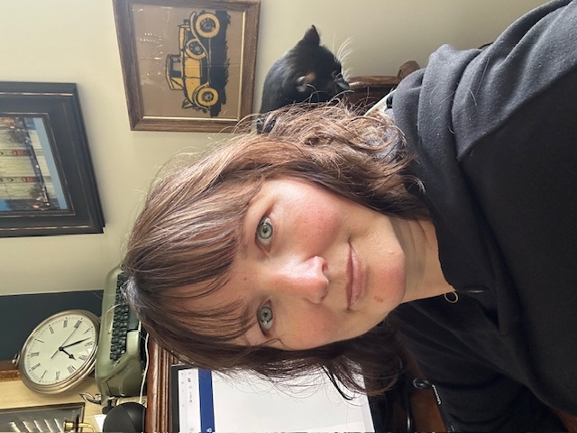

I'm Carmen Cox, author of The Sunheart Solution, the first in a multi-novel fantasy series; and The Golden Goblets, a murder mystery set in a cozy family inn on the California coast. These books have been in the works for a very long time and I hope to have both ready to publish by the end of 2026. A little about me: I grew up in northern California where I joined The Church of Jesus Christ of Latter-day Saints as a senior in high school, moved to Utah, went on a church mission to Sweden--hejsan!--and ended up getting married to a boy I went to high school with in northern CA. Kind of a long loop! Together with our three children, we have lived in bush Alaska and on an island in Washington, and have now circled back to Utah. Though I'm fascinated by almost every aspect of the arts--you should see my craft room, I mean, actually, you shouldn't!--my major pastime in life has always been reading. That being the case, it seems a little odd that the urge to write didn't show up until after I married my husband, who observed my reading addiction and on the strength of it encouraged me to write my own stories. Looking back I have to laugh at my own naivete in thinking how easy it would be just sit down and start cranking out full-fledged novels. Easy it is not! But over time the art and craft of storymaking has become something I truly love...and now I hope to share some of the fruits of that pilgrimage with you. And a few pictures of my cats and some beautiful clouds. Maybe some typewriters too.


Hello!
Allow me to introduce myself...
